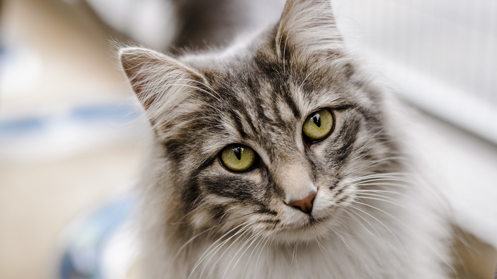

Our love for pleasing our customers is only beat by our love for our cats. We founded Cat Cafe with the intention of spreading our love for food, cats, and fun. Cat Cafe has been family owned and family run for the past 40 years. Cat Cafe started back in 1978 when our grandfather, Katsu Takara, came from Japan in search of creating a restaraunt centered around what he loved, cats. He started by creating this restraunt. He thought he would be able to build restaurants across the country, but later on decided to leave is heart in the one and only, Cat Cafe. We let all of our customers pet and feed the cats. The cats can use toilets, so if you need to go, and the cat is there, it is going to be a while. Out restraunt is full of amazing art. We have a modern looking, yet historic building.